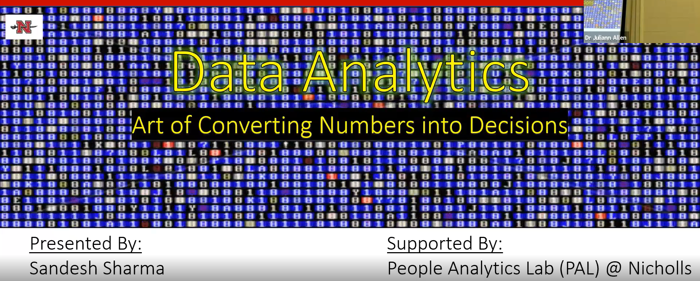

Recently, I was invited by couples of faculty member from Nicholls State University’s College of Business to present about the Data Analytics. The presentation was all about data analytics future, job demand, scope and resources available at College of Business. I want to thank Dr. Chris Castille for arranging this opportunity. I have already given 6 presentation in the various classes like Computer Information System [CIS_231], Business Statistics [QBA_282/283], Management [MNGT_301], Marketing [MKTG_470] and Business Administration [BSAD_101]. I still have two more presentation to give which is on mid-April.
The video of one of my presentation given on MKTG_470 can be found on this link

I am sorry for the audio quality of the video. I should have presented nearby the mic. There are plenty of mistakes as I was nervous as well as excited. At the end, I would like to thank the respective faculties who gave me a chance to present in their classes. In addition, I would also expand my gratitude towards the students who listened my presentation for 45 minutes. 😃